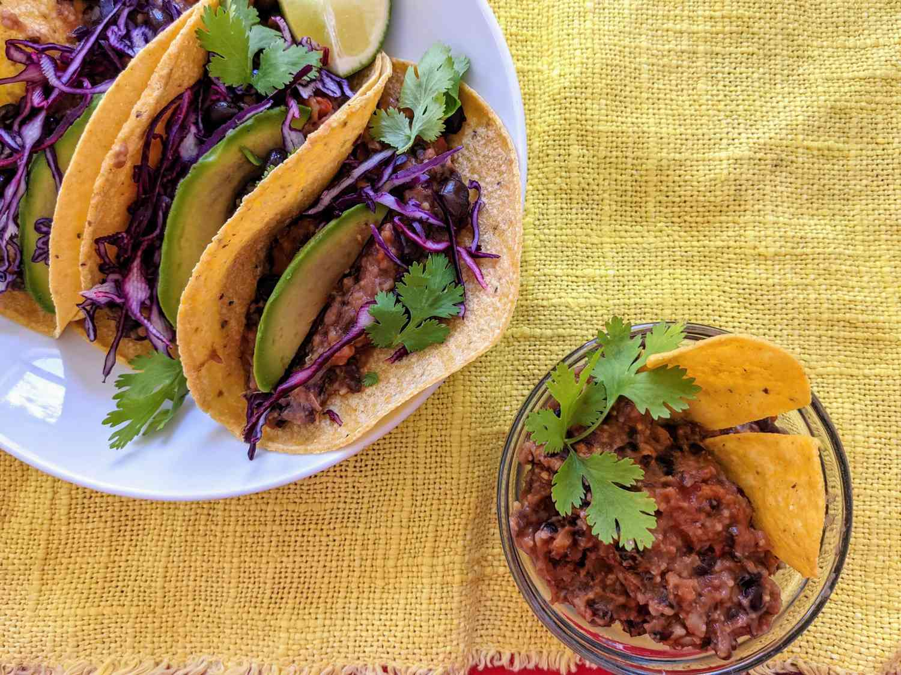

Vegan Tacos

Description
This vegan tacos filling recipe includes fried beans as its base, as well as a spice mix.
Ingredients
- 1 onion, diced
- 2 cloves garlic, minced
- 1 tablespoon olive oil
- 1 bell pepper, chopped
- 2 cans black beans, rinsed, drained, mashed
- 2 tablespoons yellow cornmeal
- 1 and half tablespoons cumin
- 1 teaspoon paprika
- 1 teaspoon cayenne pepper
- 1 teaspoon chili powder
- 1 cup salsa
Steps
- Add olive oil to skillet over medium heat. Stir in onion, garlic and bell pepper.
- When bell pepper tender, stir in mashed beans and cornmeal.
- Add spices, cover and cook 5 minutes.